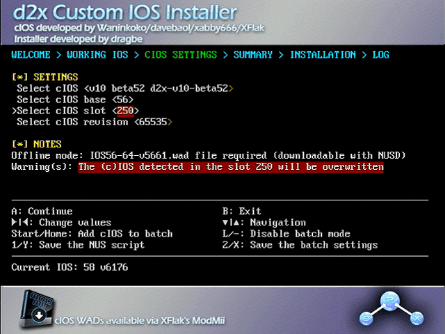

cIOS
- 下载cIOS 将其解压到SD卡根目录
- 将SD卡插入Wii 打开Homebrew Channel,并运行d2x cIOS Installer
- 按A键,将选项设置为:
Select cIOS: v10 beta52 d2x-v10-beta52
Select cIOS base: 57
Select cIOS slot: 249
Select cIOS version: 65535
- 按2次A安装,安装完成后,按1次A返回,将选项设置为:
Select cIOS: v10 beta52 d2x-v10-beta52
Select cIOS base: 56
Select cIOS slot: 250
Select cIOS version: 65535

- 按2次A安装,安装完成后,按1次A返回,将选项设置为:
Select cIOS: v10 beta52 d2x-v10-beta52
Select cIOS base: 38
Select cIOS slot: 251
Select cIOS version: 65535
- 按2次A安装,安装完成后,按B退出
感谢WiiBrew和Wii Guide!